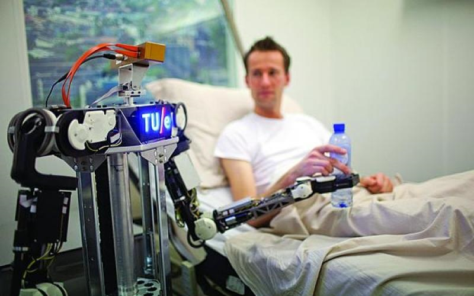
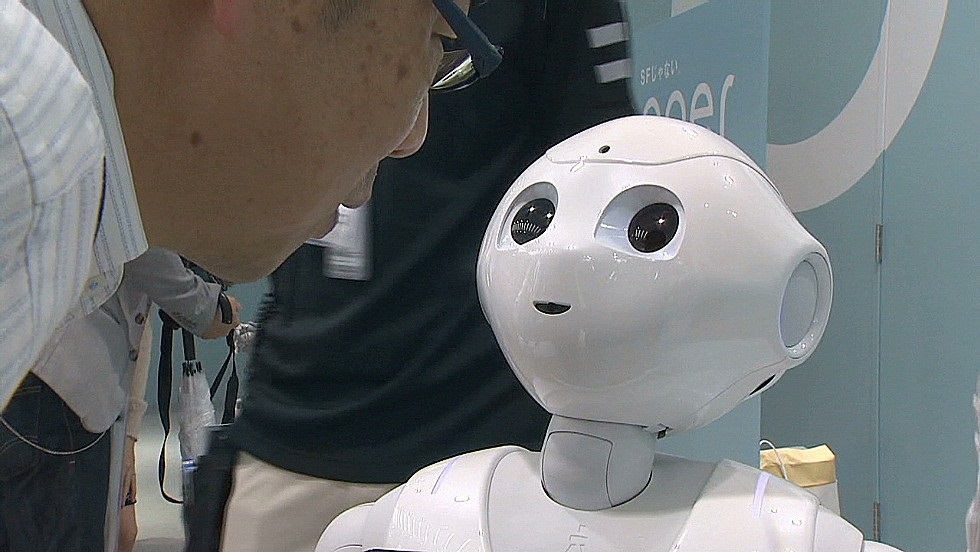

Not long ago, we used to send letters to our loved ones to convey messages. Now, communication happens very quickly. In the future, machines will be doing most tasks, so now we are working on making them more like humans, with smart decision-making and moral values. We are trying to make humans and machines work better together. Some people might wonder why this is important, but since machines will be part of our society, they will need to follow our social norms. We will need to make sure we have good rules and guidelines in place for intelligent machines of the future. These machines will be able to do many things on their own. But we should ask ourselves, what does this mean for us and do we ever ponder upon this question -
How are we going to guide machines to lead a better future ?
We need to ask this question because we have lost touch with humanity ourselves. We need to think, How the ethics and morals will play their role in the distinct future when the machine will be capable of learning from their surroundings, also from humans. Popular learning algorithms are used to make a machine "intelligent" so it can take better decisions over time which means - like a human, it will be able to learn with its everyday experiences. The machine continuously moves towards an ideal goal and takes steps on each decision level in such a way that it gets closer to it. If it is too much to understand, take this example - Suppose you are trying to learn chess. In the first game, you keep making moves until either you checkmate the opponent or they checkmate you. In the end, you follow some steps based on your opponent's moves and get an outcome, either a win or loss. In the second match, you had some idea about the moves used by your opponent, so this time you try a different approach. To get the desired outcome.
Our moral values for machines
The same thing is used by machines to get any desirable output, they follow a combination of steps, if the steps are fruitful for them and get them the desired output it's a win-win, but if it's not then they change the steps next time until they get the winning formula closest to their set ideal goal. But how can we be sure that the considered "ideal" value is the right one for all of us ? that it will be the right principle value for our interest and humanity. The way things have been going on in society suggests that people are becoming less human because of greed, political needs, moral challenges, social dilemma, corruption, and misguided figures.
This constantly changing environment is forcing Humans to play the "survival of the fittest" game by keeping humanity at bay. But we should wait for a moment and ask ourselves, Is this the world we chose to live inside? If not, then who is responsible for such a drastic change. What can we do to fix it in a society where we have started to think about profits more than the lives of humans? or there is something wrong with our evolution over these years. We know our past is covered with the blood of billions of people. People who die because of the pride of kings and people who murdered because of their greed. Is it not a good reason we do not have harmony or peace around us now, but a world full of poverty, climate crisis, social differences, pandemics, crime everywhere?

Do we still have humanity left ?
Have we forgotten the very meaning of being human, the ability to care for others? Unfortunately, our present is the output of mass manipulation, ruthless leaders, and wars. That's why we have ended up making a society where equality is just a word written on paper but inside has no meaning. In a society where billionaires live in mansions and billions of people live on streets below poverty. Now we should ask ourselves If giving food to eat and a home to live in will solve the problem? These are temporary fixes which can't undo the reminisce of past, It's because there are faults in our society principle. The world around us is changing at a massive pace, which is the reason for not being able to adapt to the keep-changing social dynamics among us.
Quote Example:
"The real risk with AI isn't malice but competence. A superintelligent AI will be extremely good at accomplishing its goals, and if those goals aren't aligned with ours, we're in trouble. You're probably not an evil ant-hater who steps on ants out of malice, but if you're in charge of a hydroelectric green energy project and there's an anthill in the region to be flooded, too bad for the ants. Let's not place humanity in the position of those ants.”

Machines to the rescue
That's where the role of machines comes into play but are we sure we are not making them just like us but better. If we will not pay attention, we might end up creating the worst versions of ourselves. If we play with the thought of - The machines are our hope to get things right this time, we have an opportunity to build a system on top of the strong ethics and morals that we wish to have on this planet. They have to be free from old social structures that bound humans from doing the right thing, treat each other as equals, and bring balance in the system that we were not able to create because someone centuries ago became greedy and created an imbalance in society. Let's change this and make a better world with technology. If there is a chance to achieve that with machines, then why not!
>
The worst nightmare of humanity will be to end up creating a world full of machines but not much different from Humans
.